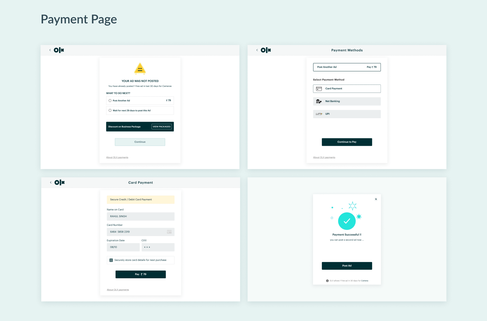
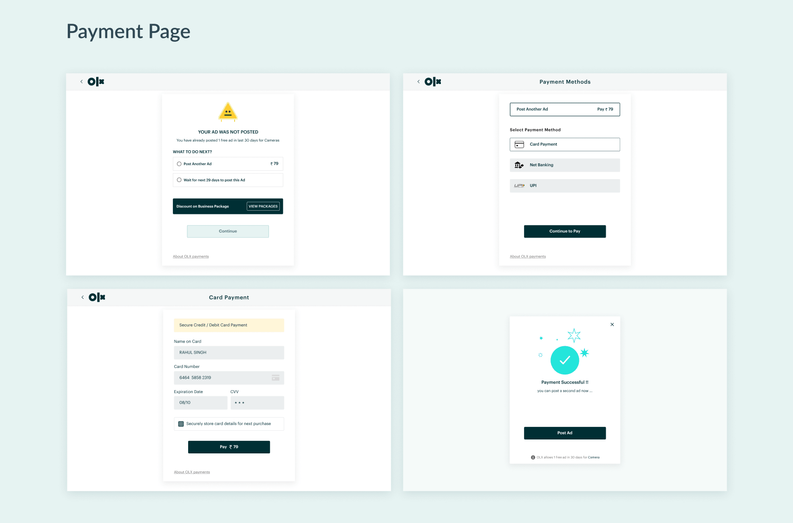
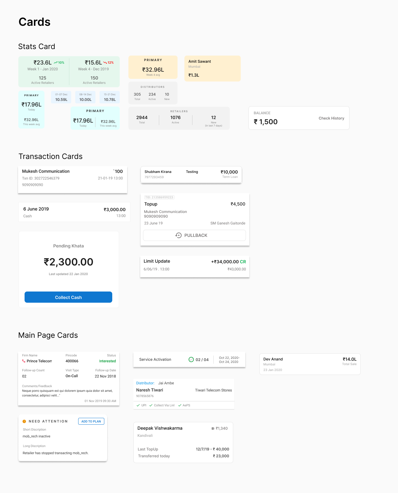
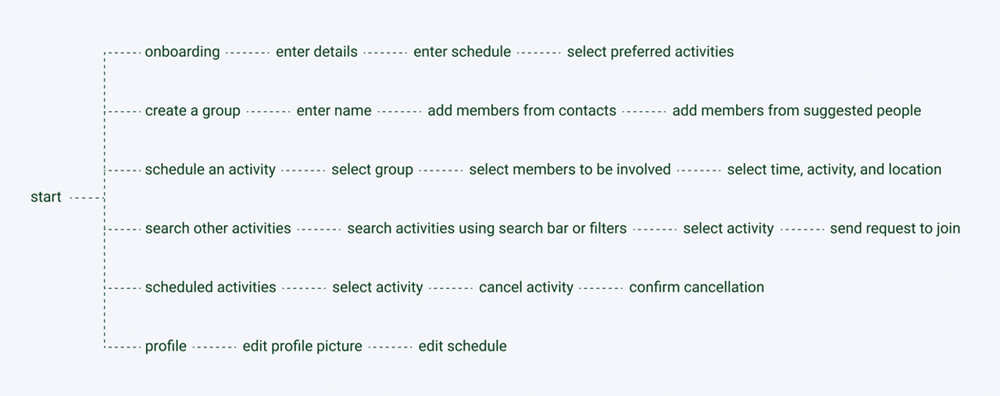

Hello there! I'm Tusharkanth Karlapudi.
I am a developer-turned-product designer with four years of experience building products and design systems, learning new tools and tricks, and creating a lasting impact on users and businesses through my solutions.
I use my tech experience to act as a bridge between designers and developers and communicate design decisions effectively.
Currently looking for full-time opportunities starting May.
Work
About Me
Also known as Tushar, I am a product designer with a habit of exploring new things to apply to my design process. I strongly believe in inclusivity and diversity, and advocate for accessibility in design and the world in general.
With my technical background and design sensibilities, I enjoy being a bridge between designers and developers and helping produce amazing products and experiences for everyone. Empathy, curiosity, different thinking, and heart are what I bring to my teams and designs. I believe those qualities are important to bring impact in people's lives, not just as a designer but also as a person.
I am always learning more about design, how it affects people and how it can improve their lives. So, if you wanna just chat about design in general, or share an interesting opinion or fact, shoot me an email and let's talk!
Beyond design, I am an ambivert with a love for soccer and tennis. I geek out on history, comics, manga, Star Wars and LOTR. You can find me listening to classic rock, prog rock(Rush, all the way!) and blues. I am still working on my cooking skills, but I think I am doing pretty well!
Contact
Interested in getting in touch?

Alto Essentials Store
Buy Over-the-Counter meds on the Alto Pharmacy app
Duration: 1 week
My role
Product Designer in a team of three
Overview
Using the Alto Pharmacy app, patients were able to buy OTCs/essentials only as add-ons to their prescription deliveries and not as separate orders. With the demand for essential pharmacy meds increasing, we realized that it was important for the patients to have a separate touchpoint to do those purchases so that they don’t have to wait until their next prescription order. That's how the idea for Essentials Store started to take shape.
Objectives
With prior research done on patient needs concerning the OTC product buying experiences, the team, and the stakeholders set the following objectives for this feature:
- Show the Essentials Store view in the app.
- Provide multiple entry points into the store on the app.
- Allow for browsing and purchasing of Essentials through the store.
- Give the option to go straight to the checkout page without needing to add prescription meds.
- Show the restrictions related to the minimum order amount and delivery fee clearly.
Initial work
The team met to brainstorm possible entry points and also rough ideas about the user flow and came up with a couple of options, which were then presented to the stakeholders. I got to work on creating wireframes to show how the flow would work and also exploring options to add to the agreed-upon flow.
Explorations
I was tasked to work on the entry points and checkout screens. Since this was a new feature, it was important to bring the focus of the patients using the app to the store. I wanted it to be in line with the design language that we had set and follow the design systems guidelines, while also looking different enough to grab attention.
Through some sketches, I created few screens and some variations within those, while also suggesting some architectural changes in the home screen that could aid the addition of the Essentials store without overcrowding any screen on the app.
Design Critique
With some refinements, we decided to present the options to the design leadership. They helped us narrow down the choices to pursue and develop further with the feedback they provided. After incorporating the feedback, we presented the updated designs to the entire design team to get further opinions.
A lot of feedback related to the entry point, which I worked on, was focused on how loud we wanted to be with the announcement of the Essentials store and how far can we push the design without deviating too far away from our design system.
Some were supportive of the idea of adding some new design elements to grab our patients’ attention while some were inclined towards trying out GIFs as shown in one of the design ideas I had created. I also received some suggestions on other options I can try out to achieve the desired impact.
Result
I tried to balance the feedback without going overboard, which brought about the final designs:
Learnings
This project was a unique challenge as this project was a high-impact one and we had a very short time to ship it, which is understandable since we are a startup in a competitive industry. Having brainstorming sessions allowed me to explore different ideas which might have been difficult if I had just been sitting alone trying to come up with something. It showed me how valuable working in a team is and how a team can bring out the best and also the wildest ideas in each other. This project was a valuable lesson for me to never be too hung up on an idea or look for the perfect idea and rather keep exploring and come up with multiple designs. It was also great to use this project as a testing ground for the low-fidelity wireframe kit I had created for the team and fix the issues which I might not have noticed while creating it.

Alto Design Systems
Revamping design systems at Alto Pharmacy
Timeline: May 2022 - August 2022
My role
Product Designer
Foundations
Alto Pharmacy, an online pharmacy app that delivers meds to patient's doorstep, underwent a branding change quite a while back, but the app aesthetic didn't match well. With an increase in users and also new features being built, there was a need to revamp the design system. As part of the revamp, prior work was done on how the look and feel of the design system would be and foundations were laid for how to build components, how to ensure accessibility, and how to be flexible with components.
We adopted an Object-Oriented UX approach to building the design system. Base components were built with different variations built in, which were turned on or off to create the necessary components to be used in the designs. This principle was followed in the internal and external design systems, aimed at pharmacy portal and patient app respectively.
Problems to solve
As the design systems were being revamped from the ground up, we faced issues in the process. I took charge and worked to solve the following issues:
- Inconsistencies with components in Figma and their implementation
- Need for new components for upcoming features in the app
- Redesigning existing app screens with the new design system
Improving and adding to the design system
I performed an audit on the design systems which were already undergoing the process of revamping, to understand how they were being used, and evaluate how the components worked within the context of the mobile and web app.
During this audit, I found certain inconsistencies within the components that were designed. Among those inconsistencies some were related to how the Figma components were laid out using auto layout, some had scalability issues and some were still not updated. As my first task, I tried to work on fixing these inconsistencies within the design system.
In parallel with the redesign work, there were requests from the designers and developers for new components, icons, and improvements which were brought to our attention through Asana. The design systems team would sit down with them to understand the requirements and work with them to deliver the necessary outcome.
One of those was the autocomplete component which was to be used exclusively for when patients needed to add medications to a list:
Applying the new design system
With the redesign ongoing, we needed to start transitioning the app from the old to the new design system. Before officially releasing it on the app, we needed to validate our assumptions and thus we started to redesign screens and experiences one by one. We tested it with the development and product teams. Their feedback helped us to modify the design patterns and components to be more intuitive and also developer friendly.
One such design pattern and implementation of the new, improved design system can be seen in the onboarding experience on the app which I worked on:
Old Onboarding Experience
Redesigned Onboarding Experience

What's Next
A design system is an ever-evolving set of standards. It's not a one-and-done process. It needs to be iterated based on user feedback, user needs, and also business needs. As such, this design system will keep evolving as we release it to the public, gather their feedback and understand user patterns through quantitative data analysis.
Along with that, with an increasing user base, we realized that we need to expand into web app territory and reach out to even more people. As such we have started to work on our desktop-friendly design patterns, given the components are, in theory, responsive enough, and hope that I get to see the realized version of it soon.
Impact so far
Learnings
Having spent most of my career dealing with design systems, first as a developer and then as a designer, this was a great experience. I got to work on a stable foundation of the design system instead of doing it all from scratch. It helped me learn how to maintain and improve a design system while thinking of the possible costs involved from a business and development perspective.
I also got to lead cross-functional meetings and workshops for the first time. The challenges of communicating developer feedback and concerns to the design team in simpler terms were pretty interesting and I think I was able to share my knowledge and understanding with the team.

SmartHome
App to manage smart devices and appliances at home
Roles: UX Design & UX Research
Overview
As a part of the course project, I decided to create a smart home app. The aim of the app was to help the user to manage most, if not all, the smart devices available and in use to them at their home. Along with that, I wanted to give the user the option to create "scenes" or automations to further enhance their experience of using the smart devices.
Problem
Smart device users need a way to manage and control multiple smart home devices conveniently with their mobile phones.
Research
I interviewed 2 users for this project. One user owns multiple smart devices and the other owns only one smart device but plans to get more for their home. Questions were largely related to their experience using apps to control the devices they own. From the interviews, I found following issues come up:
- Devices in a single page or room are pretty scattered and not organized.
- Inability to control level of access for users other than the owner of the devices.
- Preference for a more minimal design compared to SmartThings.
Based on the interview outcomes and further study of the main competitors in this category, namely Apple Home, Google Nest, and Samsung SmartThings, I decided to focus on the following features:
- Device interactions: The usual interactions which involve turning a device on or off, tweaking the device settings (for eg. altering thermostat temperature), and as such.
- Adding devices and users.
- Creating automations involving multiple devices.
Information Architecture

Initial Sketches

Towards Final Design


Prototype
What Next?
- Need to expand more on each device's interaction through their respective settings page.
- Need to make the app more accessible.
- Perform proper user testing.
Learnings
This project presented me with the opportunity to work on an idea from start to finish and create a complete app. My prior experience in design was strictly focused on one or two screens or one particular feature of an existing app. But thanks to this project, I got a good grip on how to bring an idea for a complete app into reality.

OLX Redesign
Buy, sell or exchange goods
Roles: UX Design
Overview
OLX is a C2C platform for buying, selling or exchanging goods, like electronics, vehicles, appliances, furniture, daily items and so on. While it has gone through couple of iterations over the years, there are still some problems which can hinder the experience of using the website for the user. With this redesign, I am trying to address them.
Research
I started with understanding the user flow of the website which currently exists. I found out that there are two main flows: Selling products and Buying products.

After I understood the flows, I performed a heuristic evaluation, using Ben Shneiderman's 8 Golden Rules, and I found out the following problems:

Design System
Based on my sketches, I started working on components for the website. I wanted to keep quite a few elements which are part of the existing design and tweak few others to give a sleeker feel to the website.


Final Redesign

 

Feedback
I got my final designs peer-reviewed and following were the quotes I received in response:
- "Cleaner design with lot more breathing space"
- "Very compact and to the point"
- "Can try to work on a prototype to see how the interactions work"
Learnings
This project helped me improve my skills in heuristic evaluation & working on design systems. It helped me improve my critique skills and gave me a new perspective towards developing design systems.
Pay1
Creating a Design System
Role: UX Design
Overview
Pay1 focuses on providing digital payment platform for the businesses in the unorganized retail sector of India, and help them expand and scale better while achieving financial empowerment.
My responsibilities
As a UX Design intern, I worked with the design team and development team. We created the Pay1 Design System, inspired from Material Design. I also led the design of the user reward system in the Distributor app of Pay1, but I cannot delve into the details of the module due to NDA. Please contact me if you want further details regarding it.
I conducted user research, competitor analysis and user interviews, and tasked with creating information architecture, wireframes, visual design and prototypes for the user reward system, and focused on the design of the components in the Design System.

Building a design system
As Pay1 had multiple apps, each for different audience and with different features, there was a need for a design system and component library that represents the values of the company and provides a unified ecosystem for the apps. So this was one of the tasks which I started with when I joined the company. The work was already started by the existing design team a little before I joined and I was tasked with creating the components and contribute to the color palette, which you can see below.
When I started working on the design system, user research had been conducted, where we got the answers to questions related to the customer experience, usability, intuitive nature of the apps, and cohesive nature of the apps. That gave us a solid platform to work on. We drew inspiration from Material Design principles and got to work.

Components
The design team conducted a meeting with the developers, product managers and stakeholders to understand the parts of the apps we had and prioritize which parts needed to be a common component and get their ideas on the design system. The decisions were made based on user data collected from the app and user interviews conducted.
After we decided on the components, I started designing the Dialog boxes, Overlays, Cards, Lists and Buttons used in the apps. Idea was to keep the UI simple and make it accessible as the target audience is a largely uneducated or less exposed to the smartphone culture. This drove the developement of the design system as a whole, while striving for a more organized foundation based on which designs can be made for Pay1.
Learnings
Despite the short time spent with the team, I gained experience with the process of creating a unified design system, performing user research, user journey mapping, and usability testing. This internship gave me the chance to work as a pure designer and the opportunity to be a part of the product thinking process. The experience working as a developer helped me get my points and design decisions across the developer team.
GroupFit
Promote a collaborative way of keeping yourself fit and healthy
Overview
GroupFit is an app solution for an 8 hour long hackathon.
Problem
Maintaining fitness with a busy work schedule is tough. It is a struggle to get into a routine. A solution is needed to help keep the user motivated to keep a daily routine and provide some support with their efforts.
Solution
An easy-to-use app which provides the user to form groups with friends and people with similar interests and participate in group activities based on each person's schedule, thereby promoting collaboration among the users with respect to fitness.
Research
From the user research I conducted for this problem, I was presented with following findings:
- Scheduling time for exercise is tough.
- Having others performing the same activity as the you gives motivation to do the activity themselves.
- Knowledge of activites happening around you helps in engaging with new people.
- Less complicated app will be helpful.
Information Architecture
Upon analysis with apps like MyFitnessPal and the user interviews, I found that the community aspect has been overlooked more often than not. They rely on the user to be accountable for themselves. While the approach isn't wrong, but the advantages of working out as a group cannot be underestimated. It helps in lowering stress, making exercise more engaging and fun, and thus helping people to be more motivated to continue the routine. This is why I chose to focus on this aspect in this app.
Mid-fidelity Wireframes
One of the key components of this app is the scheduling of activities and integrating it with Google Calendar. Another notable point is that the app only suggests activites and people based on the availability in their schedules and activity preferences.
Learnings
This project helped me improve my skills in prototyping and design thinking. Due to the very short time, it was a challenge to be able to implement most of my ideas, conduct a more thorough user research and conduct user testing. On the other hand, I was able to experiment with my visual design and try interactions which isn't common practice in most apps. While there is scope for improvement in the app, in terms of accessibility, design, and features, I wanted to showcase what I was able to do in short space of time with limited resources.

Arzooo
Developing a B2C platform and internal dashboards
Roles: UX Design & Web Development
About the company
Arzooo is a platform which aims to provide a digital inventory to the retailers on ground, along with sourcing and services to compete with online stores and drive up their sales.
My roles and responsibilities
As a front end developer at Arzooo, I worked on multiple products, providing support in both tech and design aspects of the products. Being a rapidly growing startup, Arzooo gave me the opportunity to work on a wide array of technologies and helped me improve my skills as a developer and as a designer.
On most projects, I was tasked with performing the user research for products and handle the development cycle. I also worked on visual design, interaction design and user journey mapping primarily.
My work here at Arzooo is under NDA. So if you want to discuss more about the projects and my role in them, do contact me.
More about my work
I worked on their B2C platform called GoStor as a developer initially and then took over the UI/UX design of the website. I worked with Adobe XD and Photoshop to create wireframes and visuals for the website, and worked with React.js to develop the website. Recently, the website is undergoing a massive shift, triggered by key decisions taken by the stakeholders and I presented a revised design system for the new platform, which now will be used for the platform as it goes under the revamp at the moment.
I also developed the home website of Arzooo along with the lead front end developer. My role was to create the webpage and the components involved while the lead developer worked on the interactions. Along with this, I also was responsible for developing internal dashbaords which were used by the business, finance and analytics teams, to maintain smooth functioning of the daily processes, helping improve the efficiency by 20%.
Another contribution came in the form of The Electronics for which I acted as the main front-end developer, while chipping in with occasional design decisions.
Learnings
Thanks to the different projects I was part of, I got the opportunity to understand how business decisions are taken with respect to the product and how inputs from stakeholders should be incorporated in the designs. It also helped me understand how I can communicate design decisions to the development team and also understand both the sides during product development cycle.

Deloitte US
Developing IIoT and AI solutions
Roles: UI Design & Web Development
About the company
Deloitte is one of the most well-known companies in the world and also a part of the Big 4 in the the consulting industry. I was lucky to start my career at this company.
My roles and responsibilities
While my role by name was that of a technology analyst, thanks to the diverse team I was a part of, I was able to work in interesting projects and in different capacities.
I got to do user research in a controlled environment, plan the requirements and outcome based on inputs from stakeholders, and develop desktop applications. I was the UX designer and lead developer for a project involving creation of an internal assessment tool.
My work at Deloitte US is under NDA, hence I cannot show you my work in any capacity. If you want to discuss my work, do contact me.
More about my work
I primarily developed smart factory solutions for clients in the manufacturing sector using React.js and Vue.js mainly. These projects involved meetings with stakeholders, tech architects, managers and developers and gave me an insight into how product development cycle works from start to finish and helped me understand how to work with client demands and balance it with feasibility and good UX. All my projects followed Agile methodology.
I also had the opportunity to work on an internal assessment tool as a UX designer and lead developer, where I followed Material Design and used Invision and Zeplin and developed the tool using React.js. I worked with the stakeholders and senior managers involved in the project. This was my first real project where I was able to oversee the product development from start to finish, and helped me find my interest in product design.
Learnings
As this was my first job after graduating, I got exposed to a lot of processes which are used for developing a product and methodologies like Agile, CI/CD and LeanUX. I gained a perspective regarding how development works and how interaction between design teams and development teams happen. I gained some valuable experience in creating and using components and design systems, and also developing desktop based clients and applications.